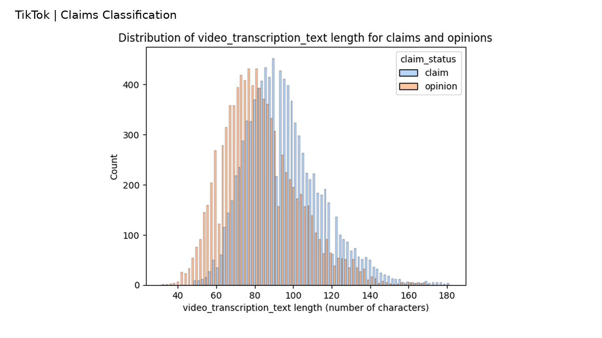
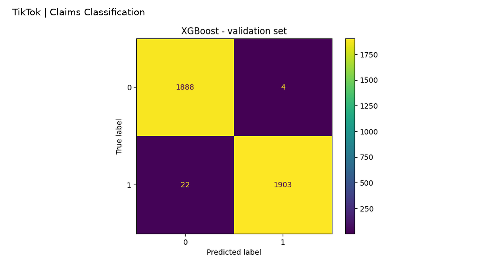
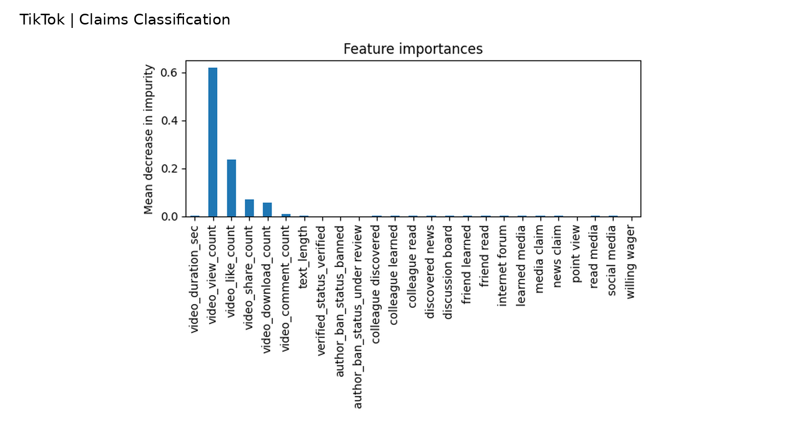

01 · Content classification case study
TikTok Claims
Claims classification using text features, engagement signals, model comparison, and final Random Forest evaluation.
19,084labeled records
4,014text vocabulary size
99.95%test accuracy
99.95%test F1
01 · Analysis
The model found a very strong classification signal, which also needs investigation.
The workflow moved from data-quality checks to text feature construction, model comparison, validation, and a final untouched test evaluation. The unusually high test performance is treated as a reason to inspect feature availability and possible label leakage before any real deployment.
Key findingEngagement and text-related variables showed strong separation between claims and opinions. That makes the model interesting, but it also makes feature timing and leakage checks essential.



02 · Model strategy
How the analysis turned into a usable model.
Model choice was tied to the question, the available data, and the evaluation metric. The result is presented with its trade-offs instead of treating one score as the whole story.
CountVectorizerUnigram and bigram text features.
Random ForestSelected through validation model comparison.
Production checkRe-test using only features available when a video is first reported.
03 · Final conclusionKey findingEngagement and text-related variables showed very strong separation between claims and opinions, producing unusually high test performance. Business impactIf validated on fresh, correctly timed data, a classifier could help moderation teams prioritize human review instead of treating every report equally. Recommended actionUse the model as a review-prioritization aid, then validate it on fresh data with features available at report time. LimitationsThe 99.95% result is a portfolio result on an educational dataset, not a production generalization claim. Leakage, calibration, fairness, and fresh-data checks are still required.
What a client could actually use from this work.
Client takeaway: The classification approach could help prioritize moderation review, but the unusually high test score makes feature timing and leakage checks essential before any real use.
04 · Recommendations & notes
What I would do next.
Recommended next steps
- Use the model as a review-prioritization aid, then validate it on fresh data with features available at report time.
- Validate the recommendation with fresh data and a clear business success metric.
Important note
A real deployment would need leakage checks, fresh data, calibration, fairness review, and monitoring for changes in content and engagement behavior.